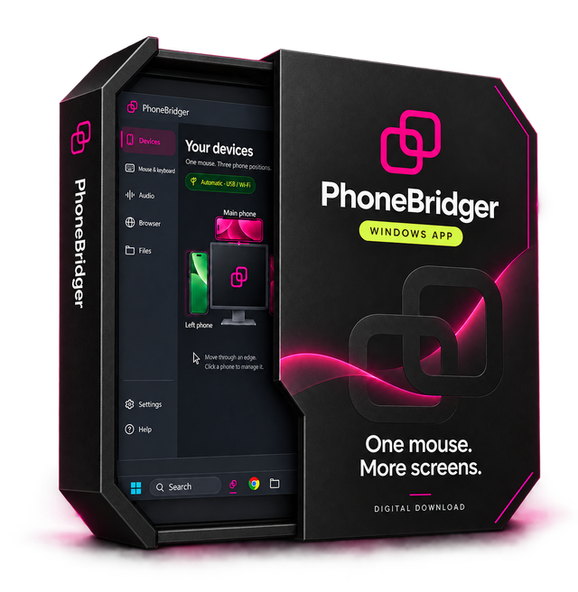

Your phone stays yours.Your desk gets closer.
A Windows mouse and keyboard for the Android apps you already use.

A bridge between screens.
PhoneBridger is built around a simple desk habit: your phone is beside your PC, and your mouse is already in your hand.
Move through the chosen edge of your Windows screen to control your physical Android phone. Type with the keyboard on your desk. Move back to continue on your PC.
The apps you know.
The workspace you choose.
Keep your phone’s own Android apps and choose where each phone belongs: left, right or above. Optional holders help with the physical arrangement; the software works without them.
The current release is a beta. Try the local website demo, read the setup guide and see whether the beta fits your device.
Explore the live demo